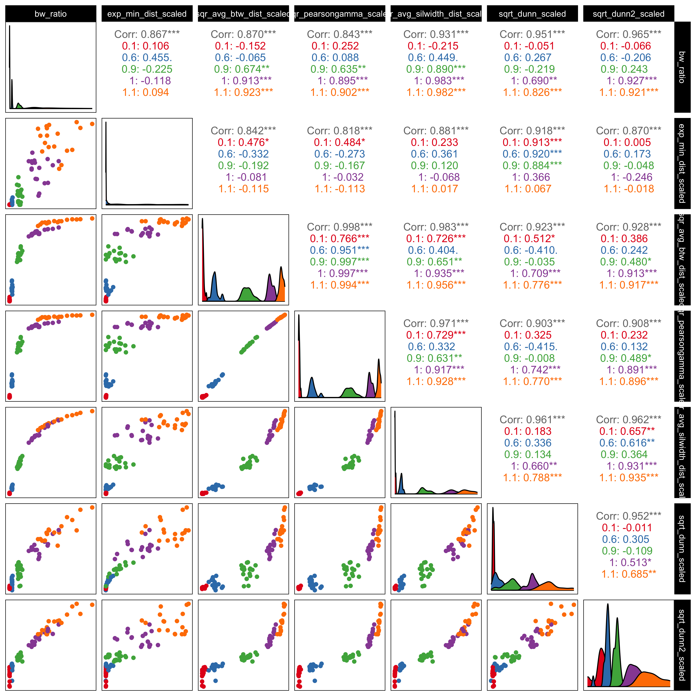
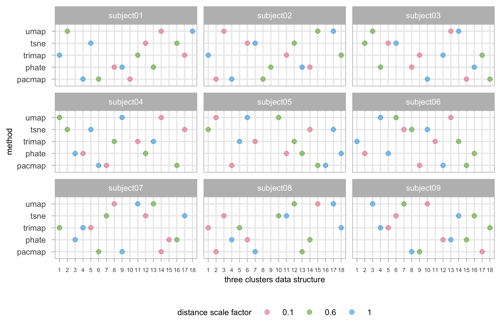
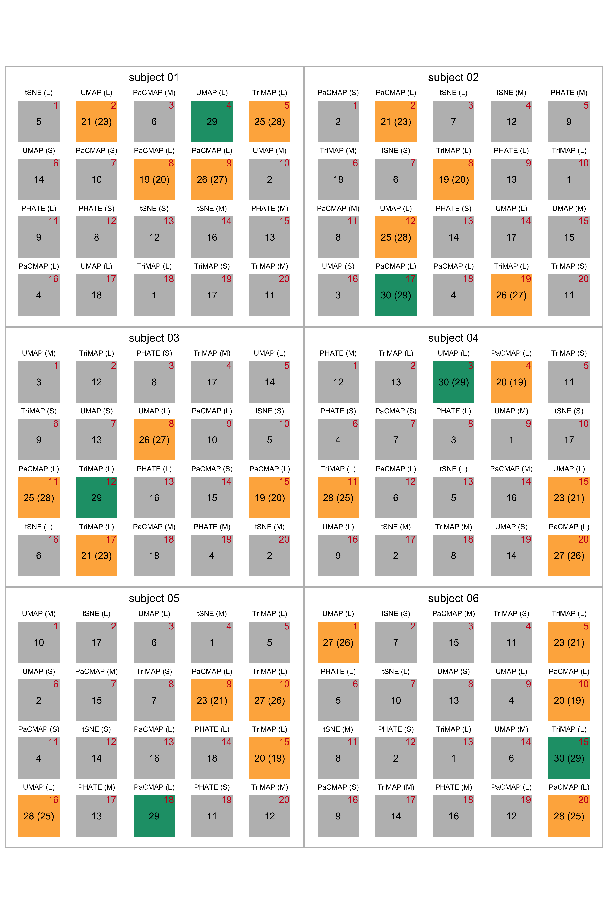
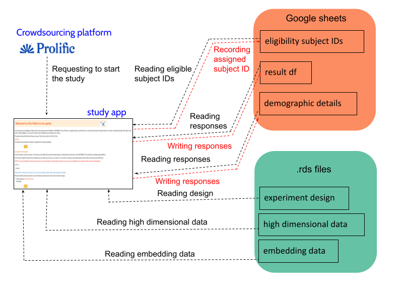
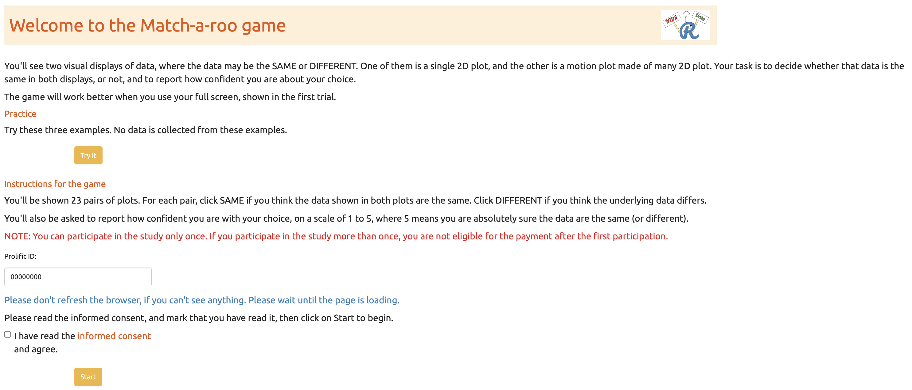
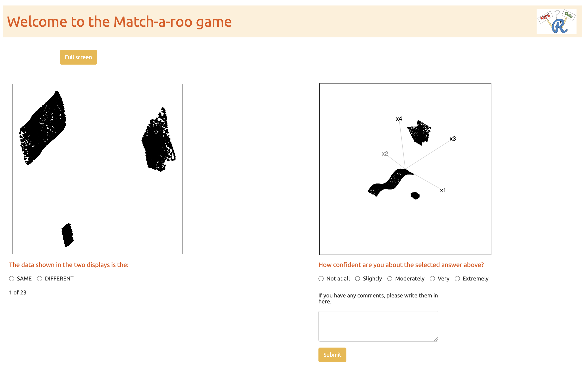
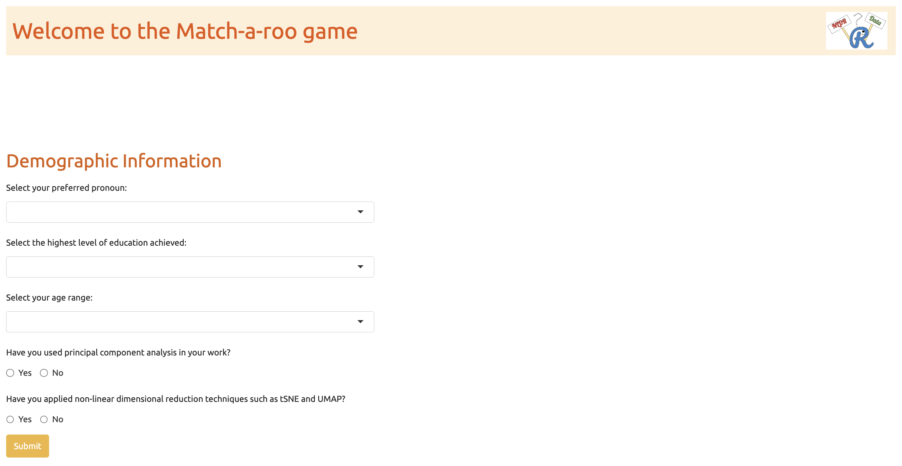

Appendix B — Appendix to “Perception and Misperception in Nonlinear Dimension Reduction: A User Study”
B.1 Videos links
Animations of the tours that used for the study are available on YouTube at the links given in Table B.1.
B.2 Scripts
B.3 Generating non-attention check data structures
Excellent — this section can be turned into a smooth, cohesive narrative that reads like an appendix entry in a methodological paper, where each data-generating function is described mathematically and conceptually. Here’s a refined version written in a unified academic style with mathematical explanations integrated naturally into the prose.
B.4 layouts
All layouts used in the experiment are available in the supplementary repository: github.com/JayaniLakshika/paper-vis-experiment/tree/main/figures/layouts. These include all embeddings generated under different NLDR methods with default hyper-parameter settings for the simulated high-dimensional data structures.
B.5 Distance metrics
To evaluate how well NLDR methods preserve the underlying structure of high-dimensional data, we considered several inter-cluster distance metrics that quantify the degree of cluster separation. These metrics provide complementary perspectives on how distinct or overlapping clusters are in the original space, allowing quantitative comparison of separability across NLDR methods.

We examined six metrics commonly used in clustering validation studies:
Between–Within (BW) Ratio
The between–within ratio compares average inter-cluster distances to average intra-cluster distances: BW = \frac{B}{W}, where
B = \frac{1}{K(K-1)} \sum_{i < j} ||\mu_i - \mu_j||, \quad W = \frac{1}{K} \sum_{i=1}^{K} \frac{1}{n_i} \sum_{x \in C_i} ||x - \mu_i||,
K is the number of clusters, n_i is the size of cluster i, C_i denotes the set of points in cluster i, and \mu_i is its centroid. A higher (BW) ratio indicates greater global separation relative to within-cluster compactness.
Minimum Distance Between Clusters
The minimum distance identifies the closest approach between two clusters: d_{\min} = \min_{i \neq j} \min_{x \in C_i, , y \in C_j} ||x - y||. This metric is sensitive to boundary overlap and captures local proximity between clusters.
Average Distance Between Clusters
The average inter-cluster distance represents the overall separation across all cluster pairs: d_{\text{avg}} = \frac{1}{K(K-1)} \sum_{i < j} \frac{1}{n_i n_j} \sum_{x \in C_i} \sum_{y \in C_j} ||x - y||. This provides a smooth measure of global spacing between clusters.
Pearson–Gamma Coefficient
The Pearson–Gamma coefficient measures the correlation between pairwise distances and binary cluster membership: \Gamma = \text{corr}(D, M), where D is the vector of pairwise Euclidean distances and M is a binary indicator matrix (M_{pq} = 1 if points p and q belong to the same cluster, 0 otherwise). A larger \Gamma indicates stronger agreement between geometric and categorical separations.
Average Silhouette Distance
The silhouette width for each observation x_i is defined as s_i = \frac{b_i - a_i}{\max(a_i, b_i)}, where a_i is the average distance between x_i and all other points in its own cluster, and b_i is the minimum average distance from x_i to all other clusters. The average silhouette is then S = \frac{1}{n} \sum_{i=1}^{n} s_i, indicating how well each point matches its assigned cluster compared to others.
Dunn and Dunn2 Indices
The Dunn index evaluates compactness and separation simultaneously: D = \frac{\min_{i \neq j} d(C_i, C_j)}{\max_{k} \delta(C_k)}, where d(C_i, C_j) is the inter-cluster distance and \delta(C_k) is the within-cluster diameter. The Dunn2 index is a variation that replaces Euclidean distances with average pairwise distances within and between clusters for improved robustness.
Because these metrics differ in scale and sensitivity, all were standardized and, where necessary, transformed to stabilize non-linear relationships. Specifically, the minimum distance was exponentiated (exp(min_dist_scaled)) to linearize its association with other metrics and reduce the effect of small distance ranges. This transformation allows for clearer comparison across metrics that vary in numerical range or distribution.
The pairwise correlations among all metrics (Figure B.1) demonstrate strong positive associations, indicating that they generally capture consistent patterns of cluster separation. However, the BW ratio and minimum distance were selected as the primary indicators for subsequent analyses. Together, they summarize both global separation (centroid-based distance normalized by cluster spread) and local proximity (the smallest inter-cluster gap). This combination provides a balanced characterization of cluster distinctness that is both geometrically interpretable and perceptually meaningful for visualization studies.
B.6 Experimental factors allocation to participants
Allocation of participants to experimental factors is an important part of experimental design. There are a total of 3 \times 5 = 15 combinations of factors for the study. Thirty-six replications for each combination results in 10 \times 36 = 360 evaluations.
Each factor combination must be evaluated by at least thirty-six participants. Based on the pilot studies for this experiment, we decided to record 20 evaluations for the study, all conducted within a time frame of 5 to 10 minutes. One of the evaluations, featuring three Gaussian clusters, was used as an attention check to ensure data quality. Additionally, three of the evaluations were assigned different data displayed across two displays to reduce the consistency of showing the same data.
Figure B.2 provides an example of how distance scale factor is allocated using data structures for the first nine participants. It can be observed that the factor combinations are assigned randomly to the data structures among the participants, ensuring a diverse set of data structures for each individual.

XXX Add description regarding how experimental factors are allocated to the subjects

S for small, M for medium, and L for large). The red color text in the top right corner of the small box represents the attempt.
B.7 Data collection process
Recruite participants
Subjects were recruited from Prolific (palan2018?), an online platform, to evaluate the trials. The study expects that the participants are uninvolved judges with no prior knowledge of the data to avoid inadvertently affecting results. Potential subjects needed with fluent in English and have completed at least 10 Prolific studies with a 98\% approval rate. The Prolific server only considers participants who are age 18 and older.
All subjects were trained using three example displays to orient them to the evaluation trials and provided introductory materials. All subjects who completed the task were compensated 9.96 GBP per hour for their time via the Prolific payment system.
Web application to collect responses
The survey web application, Match-a-roo, is designed to collect survey responses and demographics using the shiny (winston2024?) package in R. Each subject had access to the survey via the shiny.io server. The first interface of the survey app contained an introduction, instructions for the survey (Figure B.5), a consent form (Figure B.6), and buttons to access, for example, actual trials. Participants can try three examples prior to the study where the answers were not recorded (Figure B.7). The subjects were first asked for their consent to the responses being used for analysis.
After giving consent, the participant can start the trials. Two visual displays of data are shown where the data may be the same or different (Figure B.8). One of the visual displays is a static plot, and the other is a motion plot made of many plots. The participants were asked to decide whether that data was the same in both displays and to report their confidence about their choice and any comments about the answer.
When the participants completed the twenty-three evaluations, they were asked for their demographics which included preferred pronoun, the highest level of education achieved, their age category, whether they used principal component analysis in their work, and whether they applied NLDR techniques such as tSNE and UMAP (Figure B.9). Finally, the participants need to click on prolific URL (https://app.prolific.co/submissions/) to redirect back to the Prolific app (Figure B.10).






Once a participant starts the study (Figure B.4), the “eligibility_subject_IDs” Google Sheet is connected and read in the Shiny app to identify which subject IDs have not yet been assigned to anyone, as indicated by the “used” column. If the “used” column is marked as NA, it means that the subject ID has not been assigned.
After identifying the eligible subject IDs, one is randomly assigned to the participant, and “1” is recorded in the “used” column corresponding to that subject ID. This subject ID will later assist in connecting the experiment design, high-dimensional data, and embedding data.
Once a subject ID is allocated to a participant, the experiment design data is loaded, and the relevant attempts, data structure, and methods are presented to the participant. This process continues until the participant completes all attempts. After determining the data structure and methods, the relevant high-dimensional and embedding data is loaded from “high_d_data_three_clust_all.rds” and “embedding_data_three_clust_all.rds,” respectively, and displayed in both motion and static plots.
Once the participant records their answers, a new row is added to the “result_df” Google Sheet with their responses. This continues until the participant finishes the study. Finally, after completing the evaluations, participants are asked to fill out a demographics questionnaire. Their responses are then recorded in a new row of the “demographic_details” Google Sheet.
B.8 Analysis of results relative to data collection process
Data cleaning
The initial step in the data cleaning process involves the selection of subjects who have completed the requisite twenty-three trials, including the demographics and the attention check trial. Participants who exceeded the average time of 5-10 minutes were excluded, as determined from the pilot study. Following this, individuals who didn’t accurately detect the attention check trial were also removed. Furthermore, the attention check trials were removed, as they did not contribute to the further analyses. Finally, the collected data set is further refined by filtering out all the responses, which showed the same data structures in static and motion plots.
Demographics
Along with the responses to the trials, we have collected a series of demographic information including preferred pronoun, age range category, education background, and previous experience in PCA and Non-linear dimension reduction techniques. Table B.2, Table B.3, Table B.4, Table B.5, and Table B.6 provide summaries of the demographic data.
XXX After collecting data need to add interpretations
XXX Add plot with time Vs attempt for the subjects XXX Check is there any specific pattern for each demographics with their answers (eg: Male correctly identify more, or in which region…)
B.9 Non-attention check data generation
The process of generating non-attention check data involves several steps. First, we generate clustering data using a distance scale factor of 1, with sample size of 7500, no noise dimensions, and no background noise. Next, the data generated with a distance scale factor of 1 and a sample size of 7500 is used to create data with different distance scale factors (0.1) (?alg-gen-diff-sf).
B.10 Non-linear dimension reduction data generation
Dimension reduction data generation is performed using various methods: tSNE ((algo-gen-tsne?)), UMAP ((algo-gen-umap?)), PHATE ((algo-gen-phate?)), PaCMAP ((algo-gen-pacmap?)), and TriMAP ((algo-gen-trimap?)) on each high-dimensional dataset, which are then combined at the end.